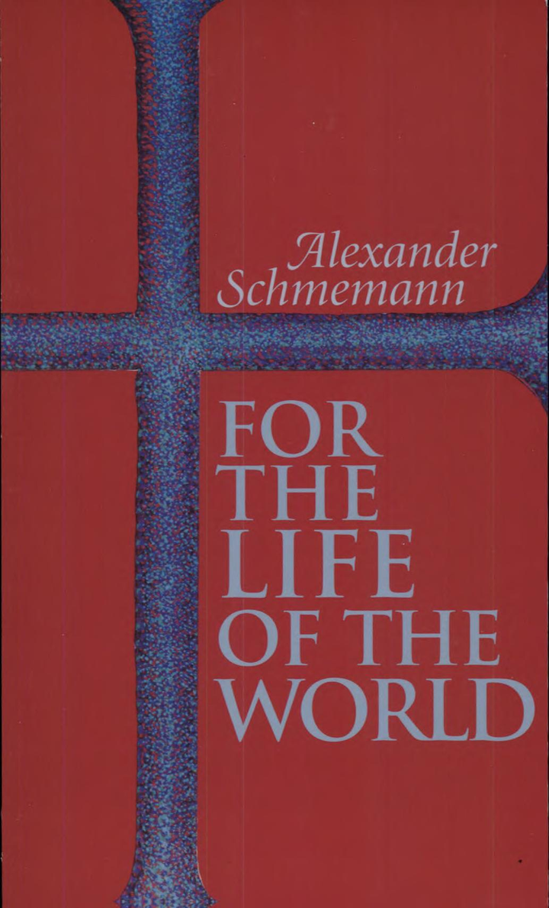
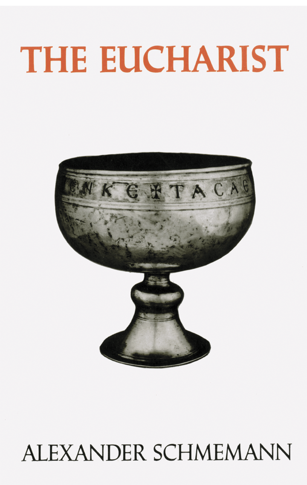
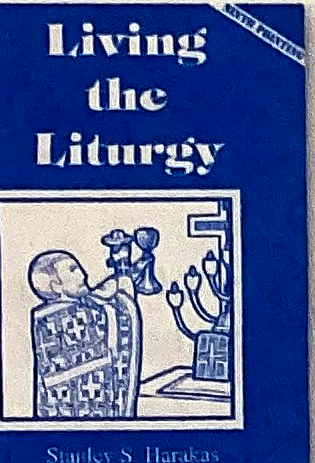
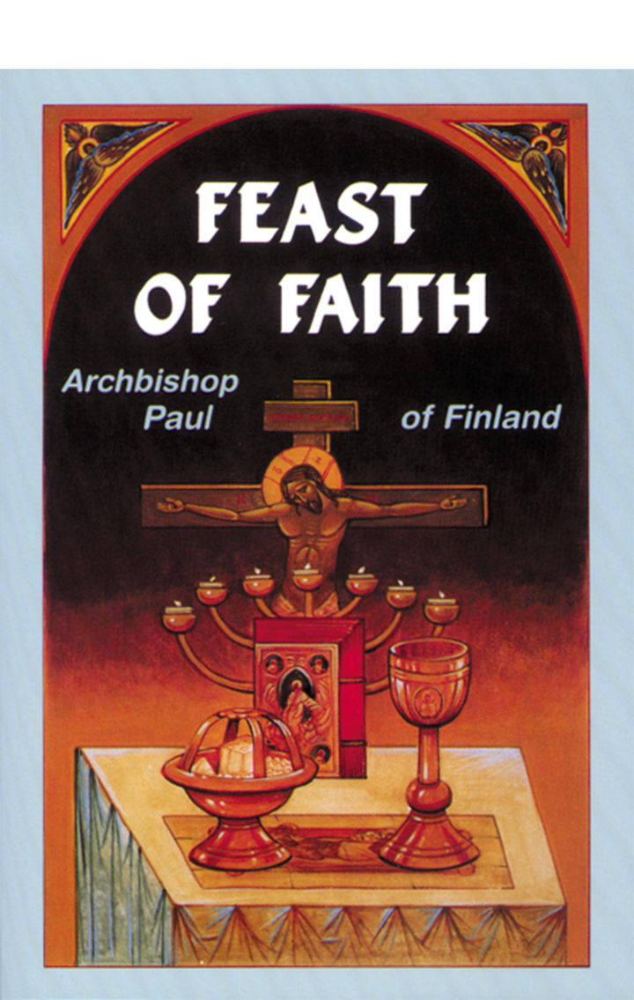
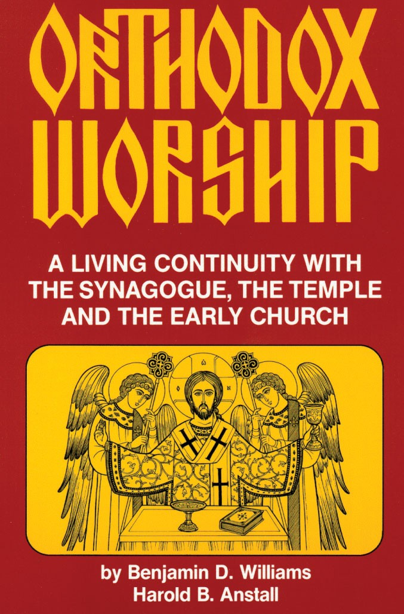
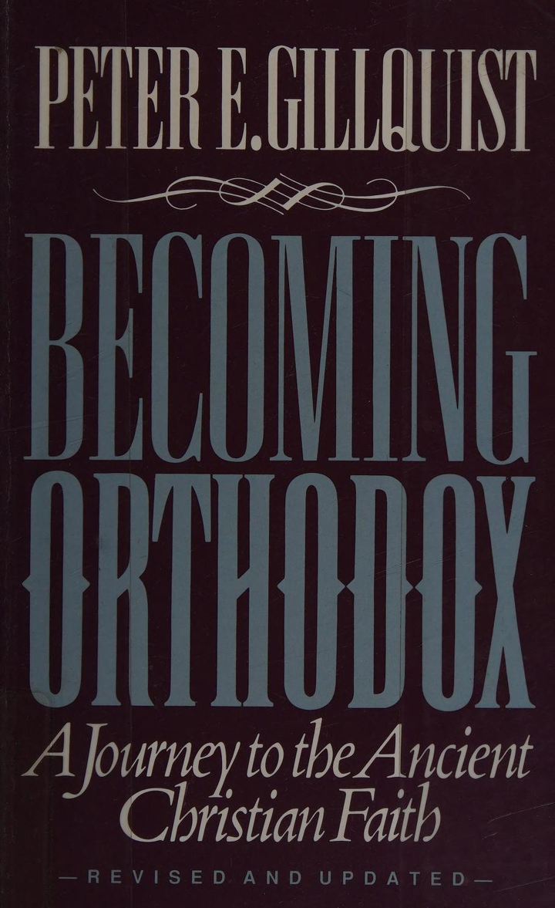
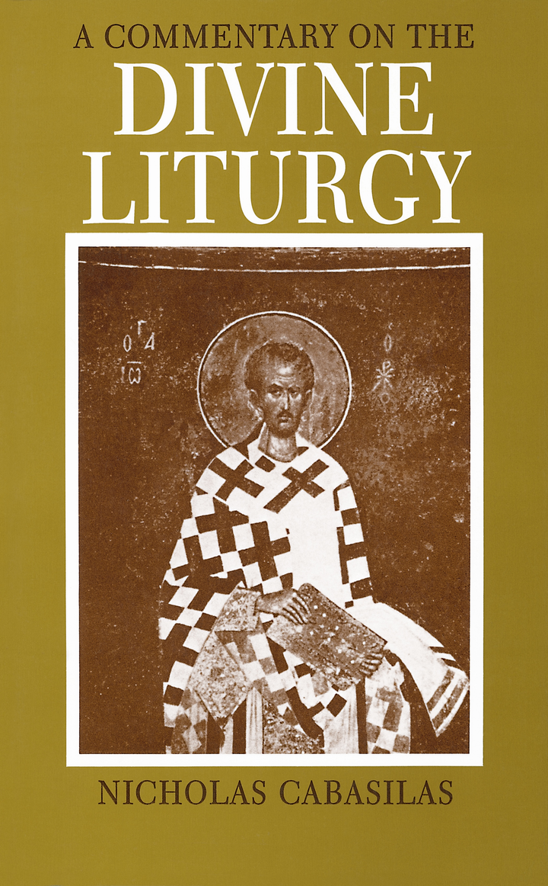
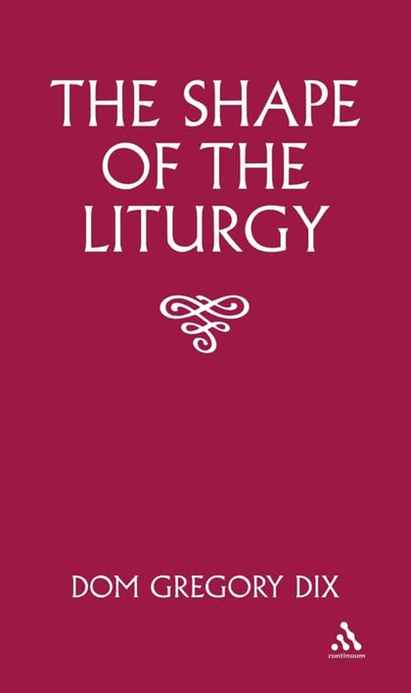
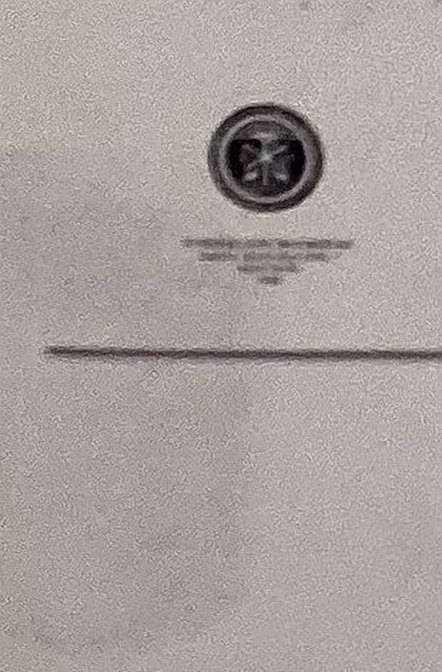

APPENDIX II
Recommended Reading

For the Life of the World Fr Alexander Schmemann 151 pages
ISBN 0-913836-08-7
St Vladimir Seminary Press, Crestwood, New York 10707
In For the Life of the World Alexander Schmemann suggests an approach to the world and life within it, which stems from the liturgical experience of the Orthodox Church. He understands issues such as secularism and Christian culture from the perspective of the unbroken experience of the Church, as revealed and communicated in her worship, in her liturgy – the sacrament of the world, the sacrament of the Kingdom.
Father Alexander Schmemann (†1983) was a prolific writer, brilliant lecturer, and dedicated pastor. Former dean and professor of liturgical theology at St Vladimir’s Orthodox Theological Seminary, his insight into contemporary culture and liturgical celebration left an indelible mark on the Christian community worldwide.

The Eucharist Fr Alexander Schmemann 245 pages
ISBN 0-88141-018-7
St Vladimir Seminary Press, Crestwood, New York 10707
The Eucharist is the crowning achievement of the well-known liturgical scholar, Alexander Schmemann. It reflects his entire life experience and thoughts on the Divine Liturgy, the Church’s central act of self-realization.

Living the Liturgy Stanley S. Harakas 144 pages
ISBN 0-937032-17-4
Light and Life Publishing Co., PO Box 26421, Minneapolis MN 55426-0421
Living the Liturgy focuses not only on the form and meaning of the Liturgy, but also on how we can personally participate more fully in the Divine Service and how we can live out the reality of the Liturgy in daily life and practice.

Feast of Faith Archbishop Paul of Finland 112 pages
ISBN 0-88141-072-1
St Vladimir Seminary Press, Crestwood, New York 10707
Using simple, accessible language, Archbishop Paul guides the faithful towards a deeper understanding of the rites and prayers of the liturgy, and thus, towards a more fruitful participation in the Banquet of the Kingdom.
Archbishop Paul, head of the Orthodox Church in Finland from 1969 to 1987, is well known for his popular explanation of Orthodoxy in The Faith We Hold.

Orthodox Worship Benjamin D. Williams and Harold B. Anstall 222 pages
ISBN 0-937032-72-7
Light and Life Publishing Co., PO Box 26421, Minneapolis MN 55426-0421
Orthodox Worship: A Living Continuity with the Temple, the Synagogue and the Early Church introduces us to worship, its ritual and sacramental expressions, while focusing on inner prayer and spirituality as a means to union with our Lord and Saviour, Jesus Christ.
Foreword by Metropolitan Philip, Primate of the Antiochian Orthodox Christian Archdiocese of North America.

Becoming Orthodox Peter E. Gillquist 190 pages
ISBN 0-9622713-3-0
Conciliar Press, P.O. Box 76, Ben Lomond, California 95005-0076
Becoming Orthodox: A journey to the ancient Christian faith is the personal story of a group of Evangelical leaders who searched for and found the Orthodox faith. The book presents a realistic account of the struggles and questions many have in their journey into Orthodoxy.

A Commentary on the Divine Liturgy Nicholas Cabasilas 120 pages
ISBN 0-913836-37-0
St Vladimir Seminary Press, Crestwood, New York 10707
©1960 E.M. Palmer
Nicholas Cabasilas’ Commentary on the Divine Liturgy, written around 1350 A.D., is a remarkable product of Byzantium’s last great flowering of theology. Cabasilas comments in detail on the Byzantine rite of his day. The work is invaluable for all those who wish to understand more about the theory and practice of worship in the Orthodox Church.

The Shape of the Liturgy Dom Gregory Dix 764 pages
ISBN 0-8264-5517-4
Continuum, The Tower building, 11 York Road, London SE1 7NX
370 Lexington Avenue, New York NY 10017-6550
©1945 Dom Gregory Dix
Dom Gregory Dix’s work is considered the classic account of the development of the Eucharistic rite and continues to be an authoritative work on the subject. He presents his massive scholarship in lively and non-technical language for all who wish to understand their worship in terms of the framework from which it has evolved.

The Precommunion Rites Robert F. Taft, S.J. 574 pages
ISBN 88-7210-326-6
Pontificio Istituto Orientale, Piazza S. Maria Maggiore, 7, I-00185 Roma
©2000 Pontificio Istituto Orientale, Roma
Volume V of A History of the Liturgy of St John Chrysostom
Robert Taft is considered by many to be the preeminent modern scholar in the field of liturgical studies. His series describing the history of the Liturgy of St John Chrysostom is a very technical, detailed account of the development of the Liturgy from the earliest times to the present.
APPENDIX I
Definitions
Aeon – or eon – an age – a period of time.
Anamnesis – Remembrance – In St Luke 22.19 and I Corinthians 11.24, 25 it is recorded that during the Last Supper Jesus commanded His disciples to “do this in remembrance [ἀνάμνησις – anamnesis] of Me.” ............
Antinomy – an apparent contradiction.
Catechumens – In the first centuries of Christianity the catechumens were people who were preparing for baptism. The process of preparation could last up to two years.
Celebrant – the primary official who heads the celebration of the Liturgy, i.e. the priest or bishop.
Circumscribe – to confine within bounds; to limit.
Congenial – similar in origin, having the same tastes, habits, or temperament.
Diskos – or paten – the plate used to hold the holy Bread.
Divide – “rightly to divide the word of Thy truth” (II Timothy 2.15) – from the Greek ὀρθοτομεῖν, “to cut a straight path”; to handle or expound the word of God correctly, without distortion. In the Liturgy this petition is made for the bishop.
Doxology – a liturgical text recited in praise of God.
Eschatology – dealing with the end times and eternity; or dealing with the reality outside of our present boundaries of space and time where God eternally exists.
Expiation – to make atonement for; to completely make amends or reparation for a wrong done to someone thereby producing a reconciliation between the offender and offended.
Incarnate – to reveal plainly in bodily form as in the Divine Person of God becoming actual flesh and blood. Anything nonmaterial or non tangible becoming material and tangible.
Incommensurable – Having no common quality upon which to make a comparison; incapable of being measured or judged comparatively.
Ineffable – beyond expression, indescribable.
Insuperable – incapable of being overcome, insurmountable.
Kondak – or kontakion could be described as a “sermon in verse accompanied by music”. In character it is similar to the early Byzantine festival sermons in prose, but meter and music have greatly heightened the drama and rhetorical beauty of the speaker’s often profound and very rich meditation. Normally only the first phrases of a kontakion are read during the Liturgy.
Manifest – to show or reveal plainly.
Oblation – the act of offering something.
Laver – a basin used for washing. In the Liturgy the “laver of regeneration” (Titus 3.5) is baptism, the washing of rebirth.
Litany – A form of prayer first used in North Syria about 370 A.D. in which the deacon announces a prayer and the people respond with a phrase such as “Lord, have mercy.”
Parousia – The Second and Glorious return of the Lord Jesus Christ from the Greek word παρουσία meaning “the appearance and subsequent presence with.”
Pontifical liturgy – the Divine Liturgy lead by a bishop as opposed to a Presbyterial Liturgy which is lead by a priest (presbyter / elder)
Prokeimenon – is a psalm or canticle refrain sung responsorially at certain specified points of the Divine Liturgy usually to introduce a scripture reading.
Prosphora – from the Greek Πρόσφορον meaning “offering” is a small loaf of bread representing the faithfuls’ offering of their lives to God and from which the Lamb is cut.
Rubrics – instructions concerning how to carry out a part of a liturgical service.
Sacramentalize – transforming something into that which is sacred, thereby returning it to what God originally created it to be. God touches us through material means such as words, water, wine, bread, oil, incense, candles, altars, icons, etc. How God does this is a mystery..
Sanctify – to consecrate; to make holy.
Typikon – A collection of the rules and rubrics for church services thought the liturgical year.
Tropar – or troparion is a short hymn of one stanza, or one of a series of stanzas.
Vestments – special clothing worn by the priests and deacons.
Vesting – to put on vestments.
Vigil – a watch kept during the night particularly on the eve of a religious festival.